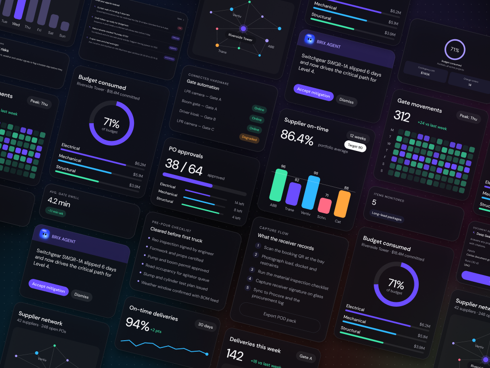
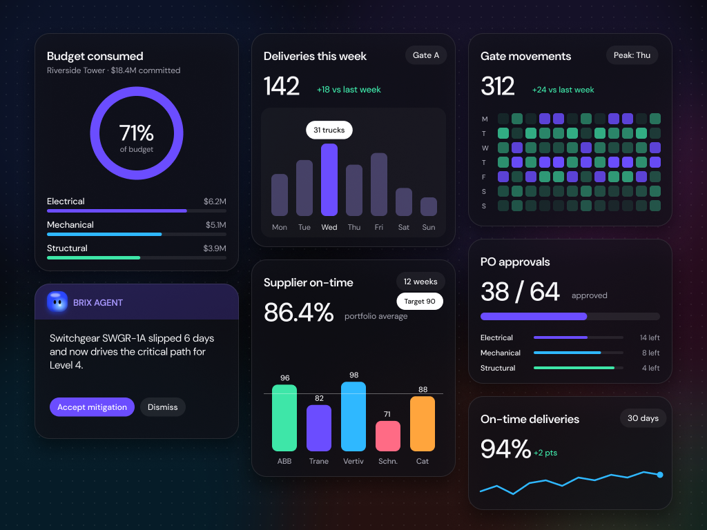
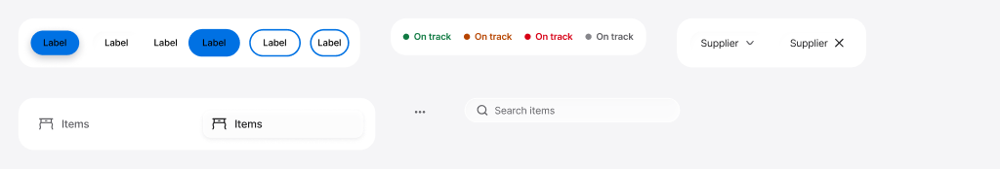
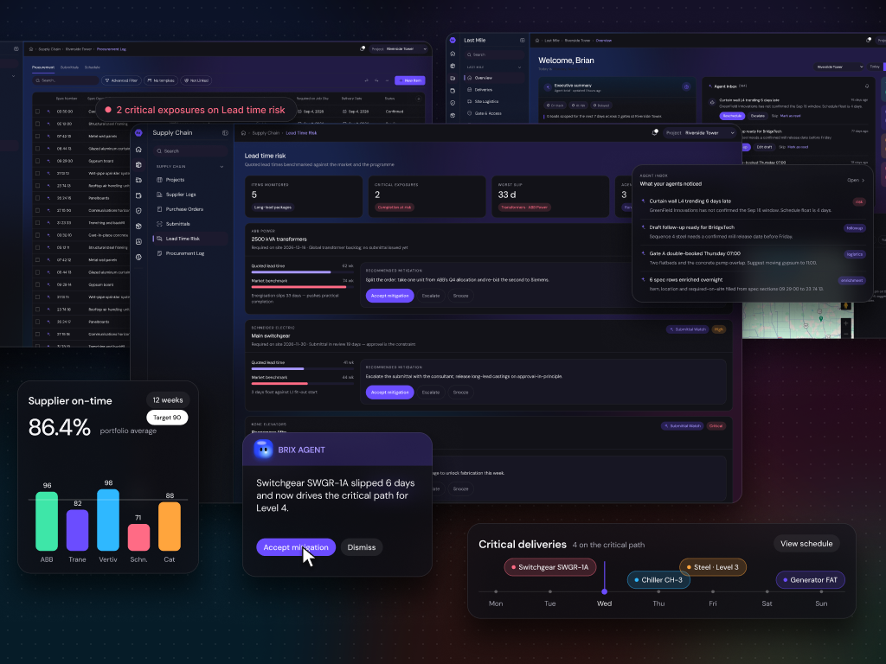
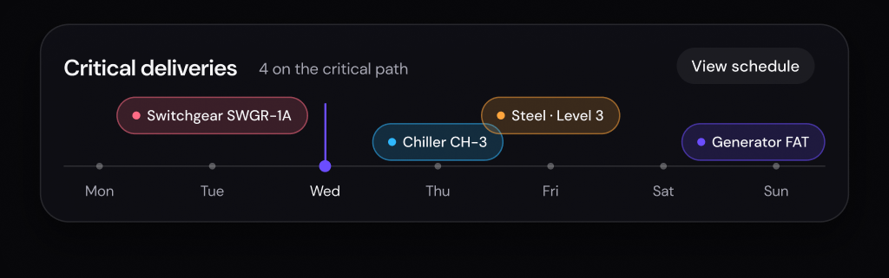
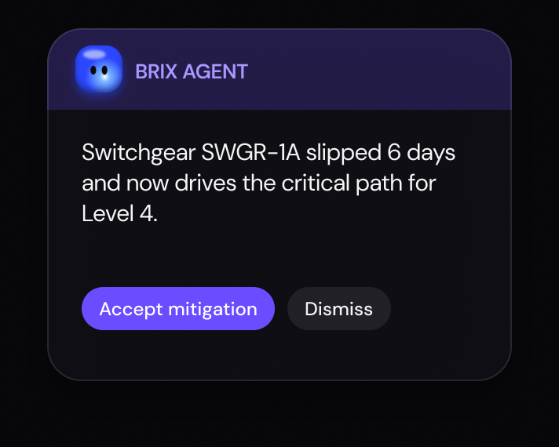

AI Construction UI Architecture
Architecting a modular, high-density UI component library and glanceable widget matrix for hyperscale infrastructure: distilling complex data center telematics into bite-sized, zero-cognitive-overhead UI elements.

01 / The Context
Translating complex construction telemetry into glanceable, modular UI elements.
Hyperscale cloud data center campuses generate tens of thousands of data points daily: concrete curing sensors, crane cycle times, supplier lead-time variances, and gate traffic manifests.
When software presents this data as traditional, bloated desktop table views, superintendents experience immediate visual fatigue. Critical bottleneck signals become indistinguishable from routine log noise.
The design challenge was to deconstruct the dashboard into discrete, composable UI widgets: self-contained visual units that communicate status, trigger action, and convey high-density insights at a single glance.
Bento KPI Cards
Radial budget consumption rings, weekly delivery distribution bars, and gate dwell heatmaps engineered as standalone responsive components.
Contextual AI Popovers
Actionable agent recommendation cards delivering single-click mitigation workflows for schedule-critical supply chain slippages.
Semantic Status Tokens
Four-tone color governance (OK, Caution, Risk, Neutral) calibrated for harsh, high-glare construction site tablet usage.
02 / System Architecture
Bento modular widget system and atomic token foundations.
Every UI element was built following an atomic token architecture: discrete 8px spatial grid, high-contrast dark backdrop elevations, and calibrated Hugeicons stroke weights.
Instead of monolithic desktop screens, our component library provides field teams with a modular bento layout. Each widget handles its own live websocket state updates, error boundaries, and contextual action menus without re-rendering parent containers.
We paired Bricolage Grotesque with tabular monospaced figures to ensure absolute numerical alignment across live currency values, delivery counts, and percentage gauges.


03 / Interface Deep Dive
Micro-interactions and progressive disclosure within individual UI elements.
High-density interfaces succeed or fail based on how micro-interactions handle ambiguity and urgency.
When a critical lead-time delay threatens the project critical path, the UI does not bury the superintendent in error alerts. The Brix Agent AI element surfaces an intelligent recommendation pill with primary and secondary mitigation choices directly inline.



04 / Shipped Impact
Measurable acceleration across global cloud infrastructure deployments.
Deployed across major data center build programs in North America, Europe, and the Asia-Pacific region, the modular component architecture established a new benchmark for field usability.
By decomposing cumbersome desktop views into focused, glanceable widgets, field supervisors reduced routine inspection reporting from 45 minutes down to under 12 minutes daily.
"The clarity of these modular UI widgets is remarkable. Our field engineers can immediately see what requires action without digging through complex desktop software trees."